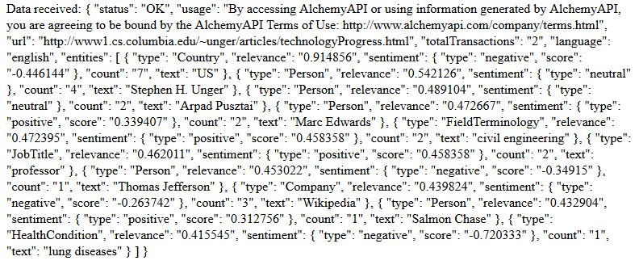

A detailed analysis of sentiment about different entities.
In our previous examples, the AI basically counted up positive and negative terminolgoy in the article as a whole, or counted them up in reference to specific words or phrases we indicated to it. This is still impressive for a computer program, but we can do much more. AlchemyAPI is able to identify the important entities, which are things like people, companies, professions, etc..., in an article, rank them by relevance, and determine how the article talks about each of them. In fact, it is able to do much more than that, but for clarity we will restrict some of its capabilities so our tiny human brains (don't hurt me, robot overlords!) can more easily see and understand what is being described.
This process is called entity extraction, and the full documentation is available here. We will implement it with the following code (only the code between "var req" and "req.addEventListener" has changed, but I want to show the full script one last time):
document.addEventListener("DOMContentLoaded", bindButton);
function bindButton() {
//bind the submit data to Alchemy api button
document.getElementById("subData").addEventListener("click", function(event) {
var req = new XMLHttpRequest();
var endpoint = "http://gateway-a.watsonplatform.net/calls/url/URLGetRankedNamedEntities";
var apikey = "apikey=yourkeyhere";
var urlSent = "url=http://www1.cs.columbia.edu/~unger/articles/technologyProgress.html";
var outMode = "outputMode=json";
var sentiment = "sentiment=1";
var disamb = "disambiguate=0";
var linked = "linkedData=0";
var coref = "coreference=0";
var struc = "structuredEntities=0";
var max = "maxRetrieve=10";
var payload = apiKey + "&" + urlSent + "&" + outMode + "&" + sentiment + "&" + disamb + "&" + linked + "&" + coref + "&" + struc + "&" + max;
var totalURL = endpoint + "?" + payload;
req.open("GET", totalURL, true);
req.addEventListener("load", function() {
document.getElementById("sent").textContent = payload;
if(req.status >= 200 && req.status < 400) {
var response = JSON.parse(req.responseText);
document.getElementById("recd").textContent = req.responseText;
} else {
document.getElementById("recd").textContent = "There was an error.";
}
});
req.send(null);
event.preventDefault();
});
}
Each of the variables setting a key equal to 0 actually turn off a function, because there is simply too much information if they are turned on. "sentiment=1" tells the API that we want it to evaluate the sentiment regarding the entities, and "maxRetrieve=10" tells it we only want to see results for the ten most relevant entities. The results are as follows:
Now we finally have a truly interesting result. We can see that the AI is able to parse out various entities referenced in the article, correctly identify the type of entity, and give us information regarding how the article author wrote about the entity. This is a fairly contrived example, of course, but one can easily see how useful and interesting it would be to use AlchemyAPI to examine different types of articles and content, and any number of applications could be built upon this capability.